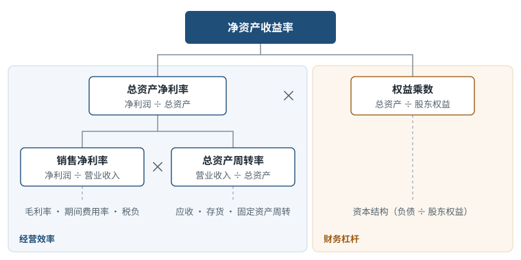
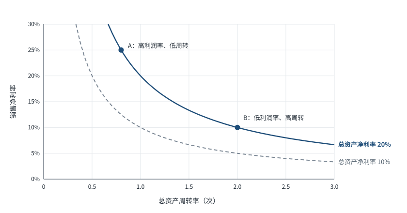
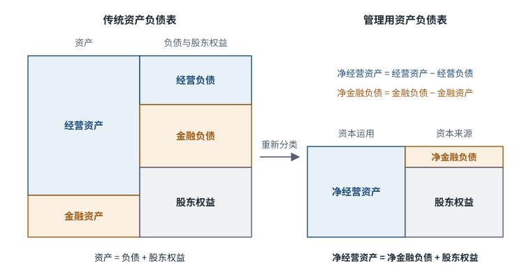
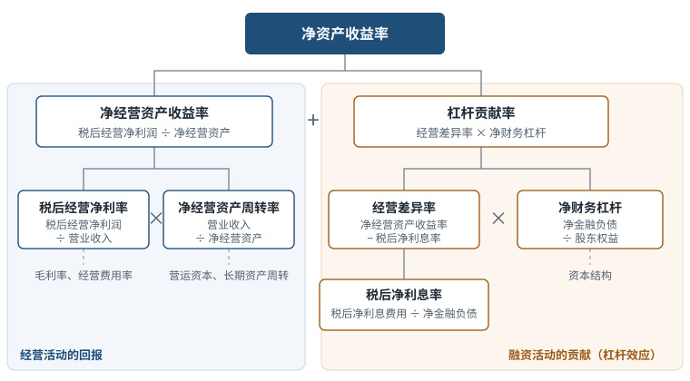
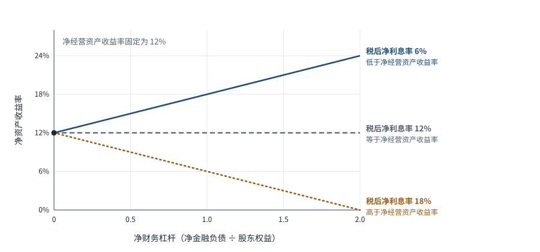
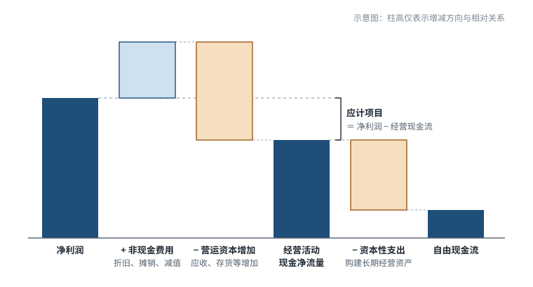
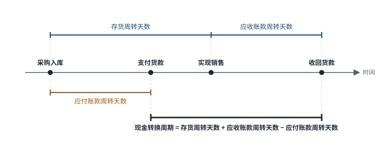
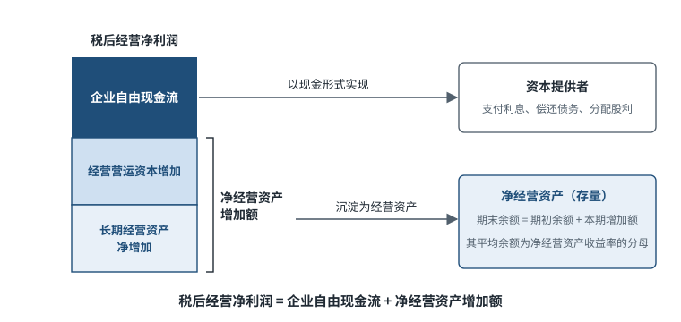

除另有说明外，比率中的资产负债表项目均采用平均余额，即（期初余额 + 期末余额）÷ 2，以使存量指标与利润表的期间口径相匹配。
01 盈利能力的系统分解
1.1 净资产收益率
$$\text{净资产收益率}=\text{净利润}\div\text{平均股东权益}$$
净资产收益率衡量股东投入资本的回报水平，是盈利能力分析的综合指标。单一的净资产收益率数值不能说明回报的来源：同一水平既可以来自较高的利润率，也可以来自较快的资产周转或较高的财务杠杆。三种来源的经济含义与风险特征不同，须分解后才能判断。
1.2 传统杜邦分析：三因素分解
$$\text{净资产收益率}=\text{销售净利率}\times\text{总资产周转率}\times\text{权益乘数}$$
其中：
$$\text{销售净利率}=\text{净利润}\div\text{营业收入}$$
$$\text{总资产周转率}=\text{营业收入}\div\text{平均总资产}$$
$$\text{权益乘数}=\text{平均总资产}\div\text{平均股东权益}$$

图 1 净资产收益率的三因素分解
分解包含两个层次：
- 销售净利率与总资产周转率之积为总资产净利率，反映经营效率，即单位资产创造利润的能力；
- 权益乘数反映财务杠杆，即单位股东权益所支撑的资产规模。
各项可以继续向下追溯：销售净利率追溯至毛利率、期间费用率与税负；总资产周转率追溯至应收账款、存货、固定资产等各类资产的周转；权益乘数追溯至资本结构。分解的目的，是把净资产收益率的变动定位到具体的报表项目。
1.3 利润率与周转率的替代关系
总资产净利率等于销售净利率与总资产周转率之积。总资产净利率给定时，二者呈反比例关系，构成一条等总资产净利率曲线。

图 2 等总资产净利率曲线：利润率与周转率的组合
图中 A、B 两点的总资产净利率均为 20%：A 依靠高利润率与低周转，B 依靠低利润率与高周转。由此得到两点推论：
- 利润率的高低本身不能说明盈利能力的强弱，须结合资产周转率判断；
- 不同商业模式通常位于曲线的不同位置，跨模式比较利润率之前，应先识别双方在资产周转上的结构差异。
1.4 传统分解的局限
分解净资产收益率的目的，是判断股东回报来自经营活动还是融资活动。两类活动的性质不同：经营活动通过生产、销售与服务创造回报，是企业价值的来源；融资活动决定资本结构，通过财务杠杆放大或缩小经营回报，并改变股东承担的风险。来源不同的净资产收益率，其可持续性与风险也不同，因此分解必须把两类活动分开。
传统杜邦分析试图以总资产净利率代表经营效率、以权益乘数代表财务杠杆，但这一划分并不成立。原因在于它所依据的报表并非按活动性质编制：资产负债表按流动性与法律权利列报，主要服务于偿债能力判断；利润表中的财务费用、投资收益、公允价值变动损益等项目，又使经营损益与金融损益交织在一起。以此为基础计算的比率，必然同时混入两类活动。具体表现为三处口径问题：
| 传统指标 | 混入的项目 | 后果 |
|---|---|---|
| 总资产周转率 | 分母总资产包含货币资金、交易性金融资产等金融资产 | 持有金融资产越多，周转率越低，即使经营活动未发生任何变化 |
| 销售净利率与总资产净利率 | 分子净利润已扣除利息费用，并包含金融资产收益 | 经营回报受资本结构与金融资产收益影响 |
| 权益乘数 | 应付账款、合同负债等经营负债与有息负债一并计入 | 通常不计息的经营负债被计作财务杠杆，杠杆被高估 |
上述问题导致三项分析结论的偏差。
第一，总资产净利率不能独立衡量经营业绩。 设两家企业的经营活动完全相同，仅资本结构不同：一家全部以股权融资，另一家以借款替代部分股权。二者总资产相同，但后者的净利润因利息费用而较低，总资产净利率也随之较低。经营业绩相同而总资产净利率不同，说明该指标同时受融资决策影响。同理，企业以闲置资金偿还借款时，经营活动并未改变，但总资产减少，净利润又因借款利率通常高于存款利率而增加，总资产净利率通常随之上升。
第二，无法显示财务杠杆的作用方向。 在"净资产收益率 = 总资产净利率 × 权益乘数"中，权益乘数恒不小于 1，形式上提高负债总会放大净资产收益率。实际上，负债增加带来的利息费用已计入净利润，使总资产净利率同时下降；净资产收益率最终上升还是下降，取决于两种效应的相对大小。传统公式没有给出决定这一结果的条件，因而无法判断杠杆是在增加还是侵蚀股东回报。
第三，误判财务风险的来源。 权益乘数将经营负债与有息负债合并计算。经营负债较多的企业，权益乘数较高，看似财务风险较大；但经营负债通常不计息，也没有固定的还本付息压力，往往反映企业对上下游的议价能力。将其计为财务杠杆，既高估了财务风险，也使其节约资本占用的作用无法在经营回报中体现。
因此，改进需要分两步：先按活动性质对报表重新分类，再在重新分类的报表上分解净资产收益率。 前者即管理用报表（1.5 节），后者即改进的杜邦分析（1.6 节）。
1.5 管理用报表：区分经营活动与金融活动
比率的口径取决于其所依据的报表分类。要使比率分别衡量经营活动与融资活动，报表本身须先按这两类活动划分；否则，无论如何组合比率，经营因素与金融因素仍混在一起。管理用报表的作用即在于此：它不改变任何会计数字，只改变项目的分组方式，使经营资本与经营损益相对应、金融资本与金融损益相对应。
重新分类的标准是：项目源于经营活动（生产、销售与服务），还是源于融资决策及闲置资金的投资。
| 类别 | 定义 | 主要项目 |
|---|---|---|
| 经营资产 | 用于生产经营的资产 | 应收账款、存货、预付款项、固定资产、无形资产、使用权资产、长期股权投资 |
| 经营负债 | 经营活动中自然形成、通常不计息的负债 | 应付账款、合同负债、应付职工薪酬、应交税费 |
| 金融资产 | 闲置资金的投资 | 货币资金、交易性金融资产、债权投资 |
| 金融负债 | 融资活动形成、承担利息的负债 | 短期借款、长期借款、应付债券、一年内到期的非流动负债、租赁负债 |
注：货币资金中维持日常经营所需的部分在理论上属于经营资产，实务中因难以区分，通常整体视为金融资产。应付票据、长期应付款等边界项目，按是否计息及形成原因归类；同一分析中须保持口径一致。
在此基础上定义：
$$\text{净经营资产}=\text{经营资产}-\text{经营负债}$$
$$\text{净金融负债}=\text{金融负债}-\text{金融资产}$$
资产负债表恒等式随之改写。重新分类后，资产等于经营资产与金融资产之和，负债等于经营负债与金融负债之和，代入基本恒等式得：
$$\text{经营资产}+\text{金融资产}=\text{经营负债}+\text{金融负债}+\text{股东权益}$$
将经营负债移至等式左边、金融资产移至等式右边：
$$\text{经营资产}-\text{经营负债}=\text{金融负债}-\text{金融资产}+\text{股东权益}$$
等式左边即净经营资产，右边前两项即净金融负债，因此：
$$\text{净经营资产}=\text{净金融负债}+\text{股东权益}$$
该式是基本恒等式的移项形式，不引入新的会计关系。左边为经营活动净占用的资本（资本运用），右边为净债权人与股东提供的资本（资本来源）。

图 3 资产负债表的重新分类
利润表按同一标准分为经营损益与金融损益：
$$\text{净利润}=\text{税后经营净利润}-\text{税后净利息费用}$$
$$\text{税后净利息费用}=(\text{利息费用}-\text{金融资产收益})\times(1-\text{所得税税率})$$
其中，金融资产收益包括利息收入以及金融资产的投资收益和公允价值变动损益。税后经营净利润可由净利润加回税后净利息费用得到。
重新分类后，资产负债表与利润表形成三组对应关系，每一组的回报与资本来自同一类活动：
| 对象 | 资本（资产负债表） | 回报（利润表） | 回报率 |
|---|---|---|---|
| 经营活动 | 净经营资产 | 税后经营净利润 | 净经营资产收益率 = 税后经营净利润 ÷ 净经营资产 |
| 融资活动 | 净金融负债 | 税后净利息费用 | 税后净利息率 = 税后净利息费用 ÷ 净金融负债 |
| 股东 | 股东权益 | 净利润 = 税后经营净利润 − 税后净利息费用 | 净资产收益率 = 净利润 ÷ 股东权益 |
分子与分母口径一致，是改进的杜邦分析得以成立的前提。
注：本讲义略去少数股东权益的区分。分析合并报表时，可将少数股东权益并入股东权益，并保持分子与分母口径一致。
1.6 改进的杜邦分析
以经营活动与金融活动的划分为基础，净资产收益率可分解为经营回报与杠杆贡献两部分。以下各式中的净经营资产、净金融负债与股东权益均为平均余额。
第一步： 按 1.5 节，净利润等于税后经营净利润减去税后净利息费用，两项分别除以股东权益：
$$\text{净资产收益率}=\frac{\text{税后经营净利润}}{\text{股东权益}}-\frac{\text{税后净利息费用}}{\text{股东权益}}$$
第二步： 第一项分子分母同乘净经营资产，第二项分子分母同乘净金融负债：
$$\text{净资产收益率}=\text{净经营资产收益率}\times\frac{\text{净经营资产}}{\text{股东权益}}-\text{税后净利息率}\times\text{净财务杠杆}$$
其中，净财务杠杆 = 净金融负债 ÷ 股东权益。
第三步： 由"净经营资产 = 净金融负债 + 股东权益"可知，净经营资产 ÷ 股东权益 = 1 + 净财务杠杆。代入后整理得：
$$\text{净资产收益率}=\text{净经营资产收益率}+(\text{净经营资产收益率}-\text{税后净利息率})\times\text{净财务杠杆}$$
括号中的差额称为经营差异率，经营差异率与净财务杠杆之积称为杠杆贡献率，因此：
$$\text{净资产收益率}=\text{净经营资产收益率}+\text{杠杆贡献率}$$
其中经营回报部分可继续分解：
$$\text{净经营资产收益率}=\text{税后经营净利率}\times\text{净经营资产周转率}$$
$$\text{税后经营净利率}=\text{税后经营净利润}\div\text{营业收入}$$
$$\text{净经营资产周转率}=\text{营业收入}\div\text{净经营资产}$$

图 4 改进的杜邦分析
| 指标 | 公式 | 含义 |
|---|---|---|
| 净经营资产收益率（亦称净经营资产净利率） | 税后经营净利润 ÷ 净经营资产 | 经营活动的回报率，不受资本结构影响 |
| 税后净利息率 | 税后净利息费用 ÷ 净金融负债 | 净金融负债的税后成本 |
| 经营差异率 | 净经营资产收益率 − 税后净利息率 | 经营回报率超过融资成本的部分 |
| 净财务杠杆 | 净金融负债 ÷ 股东权益 | 单位股东权益对应的净金融负债 |
| 杠杆贡献率 | 经营差异率 × 净财务杠杆 | 融资活动对净资产收益率的贡献 |
注： 1. 投入资本回报率与净经营资产收益率在概念上一致：投入资本 = 净金融负债 + 股东权益 = 净经营资产。二者在实务中的差异，主要来自经营资产与金融资产的划分口径。 2. 企业持有净金融资产时，净金融负债与净财务杠杆为负，公式仍然成立。此时若净经营资产收益率高于金融资产收益率，持有净金融资产会使净资产收益率低于净经营资产收益率。
与 1.4 节所列局限对照，改进的分解逐项作了处理：
| 传统分解的局限 | 改进分解的处理 |
|---|---|
| 总资产包含金融资产 | 以净经营资产为分母，金融资产归入净金融负债并与金融负债轧差 |
| 净利润包含融资成本与金融资产收益 | 以税后经营净利润为分子，净经营资产收益率不受资本结构影响 |
| 经营负债计入财务杠杆 | 净财务杠杆只包含净金融负债；经营负债从净经营资产中扣除，其作用体现为经营负债杠杆（1.8 节） |
| 无法显示杠杆的作用方向 | 经营差异率直接给出方向（1.7 节） |
两种分解所能回答的问题因此不同：传统分解只说明净资产收益率由利润率、周转率与杠杆三者相乘得到；改进分解能够回答净资产收益率中有多少来自经营活动、有多少来自融资活动，以及融资活动的贡献为正还是为负。
1.7 财务杠杆效应的方向
$$\text{净资产收益率}-\text{净经营资产收益率}=\text{经营差异率}\times\text{净财务杠杆}$$
杠杆效应的方向由经营差异率决定，强度由净财务杠杆决定。

图 5 净经营资产收益率为 12% 时，净资产收益率随净财务杠杆的变化
- 净经营资产收益率高于税后净利息率：杠杆放大净资产收益率，杠杆越高，净资产收益率越高；
- 净经营资产收益率等于税后净利息率：杠杆不影响净资产收益率；
- 净经营资产收益率低于税后净利息率：杠杆侵蚀净资产收益率，杠杆越高，净资产收益率越低。
由此得到两点推论：第一，财务杠杆放大的是经营差异率，本身不创造经营回报；第二，净资产收益率若主要来自杠杆贡献率，其可持续性取决于利差与杠杆水平能否维持，并伴随更高的财务风险。
1.8 经营负债杠杆
经营负债从经营资产中扣除，使净经营资产减少。税后经营净利润不变时，经营负债越多，净经营资产收益率越高。这一效应称为经营负债杠杆：企业凭借对上下游的议价能力占用无息资金，以较少的净经营资产支撑同等规模的经营。经营负债不承担显性利息，但其隐含成本可能体现在采购价格或销售条件之中。
02 现金流与盈余质量
2.1 盈余质量的含义
盈余质量指会计利润反映企业真实经营业绩的程度。本讲义从两个维度把握：一是现金实现程度，即利润转化为现金的程度；二是持续性，即本期利润延续到未来期间的程度。两个维度相互关联：现金实现程度低的利润，持续性通常也较低。
2.2 权责发生制与应计项目
利润表按权责发生制编制：收入在履约时确认，费用与收入配比，均不以现金收付为准。利润与现金流因此在各期之间存在差异，这一差异称为应计项目：
$$\text{应计项目}=\text{净利润}-\text{经营活动现金净流量}$$
现金流量表补充资料（间接法）列示了从净利润到经营活动现金净流量的调节过程：
$$\text{经营活动现金净流量}=\text{净利润}+\text{非现金费用}-\text{经营营运资本增加额}\pm\text{非经营损益调整}$$
其中，非现金费用包括折旧、摊销与资产减值；非经营损益调整剔除投资收益、财务费用等不属于经营活动的损益。经营活动现金净流量扣除资本性支出，即为企业自由现金流。

图 6 从净利润到自由现金流（图中略去非经营损益调整）
应计项目本身并非缺陷。权责发生制正是通过应计项目，使利润更准确地反映当期业绩。问题在于应计项目依赖估计与判断，可靠性低于现金流，也更容易受到管理层的影响。
2.3 应计项目的反转
应计项目只改变利润在各期之间的分布，不改变企业整个存续期内的利润总额：
- 营运资本应计会在后续期间反转。 本期因应收账款增加而确认的收入，在以后期间或者收回现金，或者以坏账核销冲减利润。
- 长期应计与资本性支出相对应。 折旧与摊销是以前期间资本性支出在当期的分摊。
就企业整个存续期而言，累计税后经营净利润与累计企业自由现金流之差，等于存续期内净经营资产的净变动（参见第三部分的衔接关系）；由于存续期首尾的净经营资产均为零，二者相等。判断盈余质量的关键不在单期差异，而在多期差异的累积方向：若利润持续高于经营活动现金净流量，且营运资本的扩大快于收入增长，说明营运资本应计在累积而未反转，这是盈余质量下降的信号。
2.4 营运资本与现金转换周期
$$\text{经营营运资本}=\text{经营性流动资产}-\text{经营性流动负债}$$
营运资本占用资金的时间长度，用现金转换周期度量：
$$\text{存货周转天数}=\text{存货}\div\text{营业成本}\times 365$$
$$\text{应收账款周转天数}=\text{应收账款}\div\text{营业收入}\times 365$$
$$\text{应付账款周转天数}=\text{应付账款}\div\text{营业成本}\times 365$$
$$\text{现金转换周期}=\text{存货周转天数}+\text{应收账款周转天数}-\text{应付账款周转天数}$$

图 7 现金转换周期
注：式中存货、应收账款与应付账款可取平均余额，也可取期末余额；后者便于只有两年数据时逐年比较。同一分析中须统一口径。
现金转换周期衡量企业从支付采购款到收回销售款之间，资金被经营活动占用的天数。它与盈余质量的关系有三层：
- 增长本身消耗现金。 现金转换周期不变时，营运资本随收入同比例增长。收入增长越快，营运资本增加越多，经营活动现金净流量低于利润越明显。这类差异属于增长性占用。
- 周期延长是更强的信号。 应收账款周转天数或存货周转天数持续上升时，营运资本增速超过收入增速，表明收入的现金回收变慢或存货积压。这类差异不能用增长解释。
- 负的现金转换周期使增长产生现金。 应付账款周转天数大于存货周转天数与应收账款周转天数之和时，企业以上下游资金维持经营，收入增长反而带来经营现金流入。这与 1.8 节的经营负债杠杆属于同一机制。
2.5 应计项目的度量
| 口径 | 应计比率 | 特点 |
|---|---|---|
| 现金流量表口径 | （净利润 − 经营活动现金净流量）÷ 平均总资产 | 只包含经营应计，数据直接取自现金流量表 |
| 资产负债表口径 | 净经营资产增加额 ÷ 平均净经营资产 | 包含营运资本与长期经营资产的全部变动，与管理用报表衔接 |
盈利含金量与应计项目的关系为：
$$\text{盈利含金量}=\frac{\text{经营活动现金净流量}}{\text{净利润}}=1-\frac{\text{应计项目}}{\text{净利润}}$$
盈利含金量以净利润为分母，净利润较小或为负时会失真；应计比率以资产为分母，跨期与跨企业比较时更为稳定。
实证研究表明，利润中应计部分的持续性低于现金部分（Sloan，1996），且应计项目的可靠性越低，其持续性越低（Richardson et al.，2005）。因此，在利润水平相同的条件下，应计比率较高的企业，其利润延续到未来的程度通常较低。
2.6 自由现金流
企业自由现金流是经营活动产生的现金在满足经营资产再投资之后，可供全部资本提供者支配的部分。它有两种计算口径：
$$\text{企业自由现金流}=\text{经营活动现金净流量}-\text{资本性支出}\qquad\text{（现金流量表口径）}$$
$$\text{企业自由现金流}=\text{税后经营净利润}-\text{净经营资产增加额}\qquad\text{（资产负债表口径）}$$
自由现金流最终流向资本提供者：
$$\text{企业自由现金流}=\text{对债权人的净支付}+\text{股权自由现金流}$$
$$\text{对债权人的净支付}=\text{税后净利息费用}-\text{净金融负债增加额}$$
据此：
$$\text{股权自由现金流}=\text{企业自由现金流}-\text{税后净利息费用}+\text{净金融负债增加额}$$
注：两种口径在理论上一致，实务中因利息与税收的列报位置不同而存在差异。中国企业会计准则将支付的利息列入筹资活动，经营活动现金净流量基本不含利息支出；美国公认会计原则将支付的利息列入经营活动；现行国际财务报告准则允许企业在经营活动与筹资活动之间选择。跨准则比较自由现金流时，须先统一利息的列报口径。
2.7 盈余质量的分析顺序
- 比较利润与经营现金流。 观察多期累计差异及其变动趋势，而非单期差异。
- 分解差异来源。 区分非现金费用、营运资本变动与非经营损益。
- 检查营运资本。 判断营运资本增加属于增长性占用（现金转换周期稳定），还是周转恶化（现金转换周期延长）。
- 检查再投资强度。 比较资本性支出与折旧摊销，判断自由现金流的高低是否来自再投资的收缩或扩张。
- 结合盈利能力分析。 净经营资产收益率较高且净经营资产快速扩张时，须确认扩张来自生产性资产，还是来自应收账款与存货的累积。
03 两部分的衔接
$$\text{税后经营净利润}=\text{企业自由现金流}+\text{净经营资产增加额}$$
税后经营净利润有两个去向：一部分以自由现金流的形式流向资本提供者，另一部分沉淀为净经营资产的增加。前者是已经以现金实现的回报，后者是尚待在未来以现金收回的回报。

图 8 税后经营净利润、自由现金流与净经营资产的关系
因此，盈利能力分析与盈余质量分析须结合使用：净经营资产收益率衡量回报率的高低，企业自由现金流与净经营资产增加额的构成衡量回报的现金实现程度。净经营资产收益率相同时，净经营资产增加额占税后经营净利润的比重越高，且其中营运资本所占比重越高，利润的现金实现程度越低。
参考文献
- 中国注册会计师协会. 财务成本管理[M]. 北京: 中国财政经济出版社（年度版）.
- Penman S H. Financial Statement Analysis and Security Valuation[M]. 5th ed. New York: McGraw-Hill, 2013.
- Nissim D, Penman S H. Ratio Analysis and Equity Valuation: From Research to Practice[J]. Review of Accounting Studies, 2001, 6(1): 109-154.
- Sloan R G. Do Stock Prices Fully Reflect Information in Accruals and Cash Flows about Future Earnings?[J]. The Accounting Review, 1996, 71(3): 289-315.
- Richardson S A, Sloan R G, Soliman M T, Tuna I. Accrual Reliability, Earnings Persistence and Stock Prices[J]. Journal of Accounting and Economics, 2005, 39(3): 437-485.